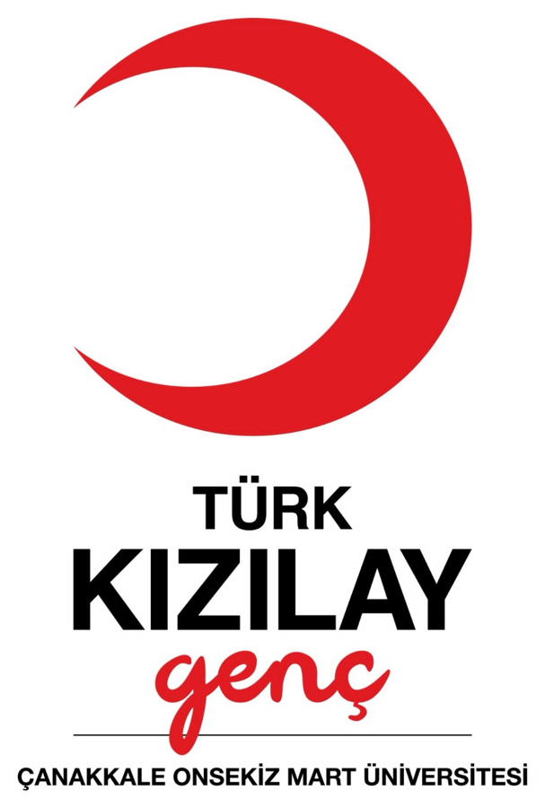

<!doctype html>
<html lang="tr">
<head>
  <meta charset="utf-8">
  <meta name="robots" content="noindex">
  <title>Katılım Belgesi · Genç Kızılay ÇOMÜ</title>
  <link rel="icon" href="data:,">
  <link rel="stylesheet" href="../ortak/css/fontlar.css">
  <style>
    /*
      Her belge A4 yatay (297×210 mm). Dört belge 2×2 dizilince A2 yatay (594×420 mm) tek bir tasarım olur.
      Tasarım fikri "iyilik dalgası": ortadaki Kızılay madalyonundan dört belgeye eş merkezli halkalar yayılır.
      Belgenin kahramanı kişinin adıdır; geri kalan her şey sessiz durur.
    */
    :root {
      --kagit: #FCFBF8;
      --murekkep: #22205A;
      --metin: #3A3866;
      --gri: #6B6980;
      --kizilay: #E11B22;
      --serif: 'Fraunces', Georgia, serif;
      --sans: 'Plus Jakarta Sans', 'Segoe UI', sans-serif;
    }
    @page { size: 297mm 210mm; margin: 0; }
    * { box-sizing: border-box; margin: 0; padding: 0; }
    body { background: #8A8A8A; font-family: var(--sans); color: var(--murekkep); }
    .sayfa { width: 297mm; height: 210mm; position: relative; overflow: hidden; background: var(--kagit); -webkit-print-color-adjust: exact; print-color-adjust: exact; }
    .sayfa + .sayfa { break-before: page; }
    @media print { body { background: none; } }
    .desen { position: absolute; inset: 0; width: 100%; height: 100%; }

    /* İçerik dış kenara yaslanır; iç köşe madalyona kalır */
    .icerik { position: absolute; width: 175mm; top: 24mm; bottom: 22mm; display: flex; flex-direction: column; }
    .sol .icerik { left: 26mm; align-items: flex-start; text-align: left; }
    .sag .icerik { right: 26mm; align-items: flex-end; text-align: right; }
    .alt-sira .icerik { top: 22mm; bottom: 24mm; }

    .logolar { display: flex; align-items: center; gap: 4mm; }
    .sag .logolar { flex-direction: row-reverse; }
    .logolar img { height: 15mm; width: auto; mix-blend-mode: multiply; }
    .logolar span { color: #B9B6AC; font-size: 4mm; }

    .hafta { margin-top: 14mm; font-size: 4.2mm; font-weight: 600; color: var(--renk); display: flex; align-items: center; gap: 2mm; }
    .sag .hafta { flex-direction: row-reverse; }
    .hafta svg { width: 4.6mm; height: 4.6mm; flex: none; }
    h1 { font-family: var(--serif); font-weight: 700; font-size: 10.5mm; line-height: 1; margin-top: 3mm; letter-spacing: -0.01em; }
    .ad { font-family: var(--serif); font-style: italic; font-weight: 500; font-size: 21mm; line-height: 1.12; margin-top: 10mm; white-space: nowrap; letter-spacing: -0.005em; }
    .ad-cizgi { width: 64mm; height: 0.5mm; background: var(--renk); margin-top: 3.5mm; }
    .metin { font-size: 3.9mm; line-height: 1.65; margin-top: 8mm; max-width: 150mm; color: var(--metin); }
    .metin b { color: var(--murekkep); font-weight: 700; }

    .alt { margin-top: auto; display: flex; gap: 12mm; align-items: flex-end; }
    .sag .alt { flex-direction: row-reverse; }
    .imza { width: 54mm; }
    .imza i { display: block; border-top: 0.3mm solid var(--murekkep); margin-bottom: 1.8mm; }
    .imza b { display: block; font-size: 3.5mm; }
    .imza span { display: block; font-size: 2.9mm; color: var(--gri); line-height: 1.4; }
    .parca { display: flex; align-items: center; gap: 2.5mm; font-size: 2.7mm; color: var(--gri); max-width: 44mm; line-height: 1.4; }
    .sag .parca { flex-direction: row-reverse; }
    .harita { flex: none; display: grid; grid-template-columns: 3.4mm 3.4mm; gap: 0.6mm; }
    .harita i { width: 3.4mm; height: 3.4mm; border-radius: 0.6mm; background: #E2DED3; }
    .harita i.ben { background: var(--renk); }

    /* Sitede açılırsa (yerel dosya / localhost değilse) belge "ÖRNEK" damgalı çıkar */
    .ornek .sayfa::after { content: "ÖRNEK"; position: absolute; left: 50%; top: 50%; transform: translate(-50%, -50%) rotate(-24deg); font: 700 62mm/1 var(--serif); color: rgba(225, 27, 34, 0.16); letter-spacing: 0.08em; pointer-events: none; }

    /* Birleşik önizleme: dört sayfa 2×2, aralarında boşluk yok */
    body.birlesik { display: grid; grid-template-columns: 297mm 297mm; width: 594mm; }
  </style>
</head>
<body>
  <script>
    var HAFTALAR = [
      { no: 1, konu: 'Claude ile Tanışma', tarih: '1 Aralık 2026', renk: '#D97757', konum: 'sol ust-sira', simge: 'claude' },
      { no: 2, konu: 'Excel Kullanımı', tarih: '8 Aralık 2026', renk: '#1D7A46', konum: 'sag ust-sira', simge: 'excel' },
      { no: 3, konu: '[3. hafta konusu]', tarih: '15 Aralık 2026', renk: '#2F6DB5', konum: 'sol alt-sira', simge: 'sayi' },
      { no: 4, konu: '[4. hafta konusu]', tarih: '22 Aralık 2026', renk: '#6B4FA0', konum: 'sag alt-sira', simge: 'sayi' },
    ];
    var CLAUDE_YILDIZ = 'm19.6 66.5 19.7-11 .3-1-.3-.5h-1l-3.3-.2-11.2-.3L14 53l-9.5-.5-2.4-.5L0 49l.2-1.5 2-1.3 2.9.2 6.3.5 9.5.6 6.9.4L38 49.1h1.6l.2-.7-.5-.4-.4-.4L29 41l-10.6-7-5.6-4.1-3-2-1.5-2-.6-4.2 2.7-3 3.7.3.9.2 3.7 2.9 8 6.1L37 36l1.5 1.2.6-.4.1-.3-.7-1.1L33 25l-6-10.4-2.7-4.3-.7-2.6c-.3-1-.4-2-.4-3l3-4.2L28 0l4.2.6L33.8 2l2.6 6 4.1 9.3L47 29.9l2 3.8 1 3.4.3 1h.7v-.5l.5-7.2 1-8.7 1-11.2.3-3.2 1.6-3.8 3-2L61 2.6l2 2.9-.3 1.8-1.1 7.7L59 27.1l-1.5 8.2h.9l1-1.1 4.1-5.4 6.9-8.6 3-3.5L77 13l2.3-1.8h4.3l3.1 4.7-1.4 4.9-4.4 5.6-3.7 4.7-5.3 7.1-3.2 5.7.3.4h.7l12-2.6 6.4-1.1 7.6-1.3 3.5 1.6.4 1.6-1.4 3.4-8.2 2-9.6 2-14.3 3.3-.2.1.2.3 6.4.6 2.8.2h6.8l12.6 1 3.3 2 1.9 2.7-.3 2-5.1 2.6-6.8-1.6-16-3.8-5.4-1.3h-.8v.4l4.6 4.5 8.3 7.5L89 80.1l.5 2.4-1.3 2-1.4-.2-9.2-7-3.6-3-8-6.8h-.5v.7l1.8 2.7 9.8 14.7.5 4.5-.7 1.4-2.6 1-2.7-.6-5.8-8-6-9-4.7-8.2-.5.4-2.9 30.2-1.3 1.5-3 1.2-2.5-2-1.4-3 1.4-6.2 1.6-8 1.3-6.4 1.2-7.9.7-2.6v-.2H49L43 72l-9 12.3-7.2 7.6-1.7.7-3-1.5.3-2.8L24 86l10-12.8 6-7.9 4-4.6-.1-.5h-.3L17.2 77.4l-4.7.6-2-2 .2-3 1-1 8-5.5Z';
    var IMZALAR = [
      { ad: 'Eyüp Çalışkanöztürk', unvan: 'Genç Kızılay ÇOMÜ<br>Eğitim Birimi Başkanı' },
      { ad: '[Ad Soyad]', unvan: 'Genç Kızılay ÇOMÜ<br>Başkanı' },
    ];

    // ---------- Dört belgeye yayılan ortak desen (594×420 mm, merkez 297,210) ----------
    function ortakDesen() {
      var cx = 297, cy = 210, s = '';
      var xy = function (r, aci) { var a = aci * Math.PI / 180; return [+(cx + r * Math.cos(a)).toFixed(2), +(cy + r * Math.sin(a)).toFixed(2)]; };
      var n = function (r, aci) { return xy(r, aci).join(','); };
      var KESIT = [[0, 0], [297, 0], [0, 210], [297, 210]];

      // İyilik dalgası: her çeyrek kendi haftasının renginde, merkezden uzaklaştıkça söner.
      // 1. hafta çeyreği daha koyu ve kalın: Claude baskın.
      s += '<defs>' + KESIT.map(function (k, i) { return '<clipPath id="kesit' + i + '"><rect x="' + k[0] + '" y="' + k[1] + '" width="297" height="210"/></clipPath>'; }).join('') + '</defs>';
      HAFTALAR.forEach(function (h, i) {
        var guc = i === 0 ? 0.75 : 0.5, kalinlik = i === 0 ? 0.45 : 0.32;
        s += '<g clip-path="url(#kesit' + i + ')" fill="none" stroke="' + h.renk + '" stroke-width="' + kalinlik + '">';
        for (var r = 97; r < 196; r += 4.5) {
          var op = guc * Math.pow(1 - (r - 97) / 100, 1.5);
          s += '<circle cx="' + cx + '" cy="' + cy + '" r="' + r + '" stroke-opacity="' + op.toFixed(3) + '"/>';
        }
        s += '</g>';
      });

      // Madalyon: dört renkli halka, beyaz disk, resmi logo
      s += '<circle cx="' + cx + '" cy="' + cy + '" r="92" fill="var(--kagit)" stroke="#E11B22" stroke-width="0.5"/>';
      [[180, 0], [270, 1], [90, 2], [0, 3]].forEach(function (d) {
        var a = d[0], b = d[0] + 90;
        s += '<path d="M' + n(86, a) + ' A86,86 0 0 1 ' + n(86, b) + ' L' + n(72, b) + ' A72,72 0 0 0 ' + n(72, a) + ' Z" fill="' + HAFTALAR[d[1]].renk + '"/>';
      });
      s += '<defs><path id="ust-yay" d="M' + (cx - 76.7) + ',' + cy + ' A76.7,76.7 0 0 1 ' + (cx + 76.7) + ',' + cy + '"/>' +
           '<path id="alt-yay" d="M' + (cx - 81.3) + ',' + cy + ' A81.3,81.3 0 0 0 ' + (cx + 81.3) + ',' + cy + '"/></defs>';
      var halka = function (id, metin) { return '<text font-family="Plus Jakarta Sans, sans-serif" font-weight="700" font-size="6.2" fill="#FFFFFF" letter-spacing="1.25" text-anchor="middle"><textPath href="#' + id + '" startOffset="50%">' + metin + '</textPath></text>'; };
      s += halka('ust-yay', 'GENÇ KIZILAY ÇOMÜ EĞİTİM BİRİMİ') + halka('alt-yay', 'YAPAY ZEKA EĞİTİMLERİ 2026');
      [180, 0].forEach(function (a) { var p = xy(79, a); s += '<circle cx="' + p[0] + '" cy="' + p[1] + '" r="1.3" fill="#FFFFFF"/>'; });
      s += '<circle cx="' + cx + '" cy="' + cy + '" r="72" fill="#FFFFFF"/>';
      s += '<circle cx="' + cx + '" cy="' + cy + '" r="68" fill="none" stroke="#E11B22" stroke-width="0.6"/>';
      var lh = 94, lw = lh * 607 / 900;
      s += '<image href="../gorseller/logolar/genc-kizilay-comu.png" x="' + (cx - lw / 2).toFixed(2) + '" y="' + (cy - lh / 2) + '" width="' + lw.toFixed(2) + '" height="' + lh + '"/>';

      // Haftaların işaretleri madalyonun köşegenlerinde
      [[225, 0, 48], [315, 1, 24], [135, 2, 34], [45, 3, 34]].forEach(function (d) {
        var p = xy(122, d[0]);
        s += simge(HAFTALAR[d[1]], p[0], p[1], d[2]);
      });

      // Dördü bir araya gelince okunan cümle
      s += '<text x="' + cx + '" y="' + (cy + 113) + '" text-anchor="middle" font-family="Fraunces, Georgia, serif" font-style="italic" font-weight="500" font-size="11" fill="#E11B22">Dört haftayı tamamladı</text>';

      // Çerçeve (her belgede iki dış kenar; birleşince tek çerçeve)
      s += '<rect x="8" y="8" width="578" height="404" fill="none" stroke="#E11B22" stroke-width="1.3"/>';
      return s;
    }

    // Haftanın işareti, (x,y) merkezli ve b mm boyunda
    function simge(h, x, y, b) {
      if (h.simge === 'claude') {
        return '<path d="' + CLAUDE_YILDIZ + '" fill="' + h.renk + '" transform="translate(' + (x - b / 2) + ' ' + (y - b / 2) + ') scale(' + (b / 100) + ')"/>';
      }
      if (h.simge === 'excel') { // 3×3 tablo: başlık satırı dolu, bir hücre seçili
        var g = '', ara = 1.1, hucre = (b - 2 * ara) / 3, x0 = x - b / 2, y0 = y - b / 2;
        for (var sat = 0; sat < 3; sat++) for (var sut = 0; sut < 3; sut++) {
          var dolu = sat === 0 || (sat === 2 && sut === 1);
          g += '<rect x="' + (x0 + sut * (hucre + ara)).toFixed(2) + '" y="' + (y0 + sat * (hucre + ara)).toFixed(2) + '" width="' + hucre.toFixed(2) + '" height="' + hucre.toFixed(2) + '" rx="0.7" ' +
            (dolu ? 'fill="' + h.renk + '"' : 'fill="#FFFFFF" stroke="' + h.renk + '" stroke-width="0.5"') + '/>';
        }
        return g;
      }
      return '<text x="' + x + '" y="' + (y + b * 0.36) + '" text-anchor="middle" font-family="Fraunces, Georgia, serif" font-weight="700" font-size="' + b + '" fill="' + h.renk + '">' + h.no + '</text>';
    }

    function kacis(metin) {
      return String(metin).replace(/&/g, '&amp;').replace(/</g, '&lt;').replace(/>/g, '&gt;').replace(/"/g, '&quot;');
    }

    function belge(h, ad) {
      var sutun = (h.no - 1) % 2, sira = Math.floor((h.no - 1) / 2);
      var harita = [0, 1, 2, 3].map(function (i) { return '<i' + (i === h.no - 1 ? ' class="ben"' : '') + '></i>'; }).join('');
      var yildiz = h.simge === 'claude' ? '<svg viewBox="0 0 100 100"><path d="' + CLAUDE_YILDIZ + '" fill="' + h.renk + '"/></svg>' : '';
      return '<section class="sayfa ' + h.konum + '" style="--renk:' + h.renk + '">' +
        '<svg class="desen" viewBox="' + (sutun * 297) + ' ' + (sira * 210) + ' 297 210" preserveAspectRatio="none">' + DESEN + '</svg>' +
        '<div class="icerik">' +
          '<div class="logolar"><span>×</span></div>' +
          '<p class="hafta">' + yildiz + '<span>' + h.no + '. hafta: ' + kacis(h.konu) + '</span></p>' +
          '<h1>Katılım Belgesi</h1>' +
          '<p class="ad">' + kacis(ad) + '</p>' +
          '<div class="ad-cizgi"></div>' +
          '<p class="metin">Genç Kızılay ÇOMÜ Eğitim Birimi tarafından Teknik Bilimler MYO iş birliğiyle <b>' + h.tarih + '</b> tarihinde düzenlenen Yapay Zeka Eğitimleri serisinin ' + h.no + '. haftası <b>' + kacis(h.konu) + '</b> uygulamalı eğitimine katılmıştır.</p>' +
          '<div class="alt">' +
            IMZALAR.map(function (i) { return '<div class="imza"><i></i><b>' + i.ad + '</b><span>' + i.unvan + '</span></div>'; }).join('') +
            '<div class="parca"><div class="harita">' + harita + '</div><span>Parça ' + h.no + '/4. Dört belgeyi yan yana koyunca seri tamamlanır.</span></div>' +
          '</div>' +
        '</div>' +
      '</section>';
    }

    // Uzun isimler madalyona taşmasın: 155 mm'ye sığana kadar küçült
    function adlariSigdir() {
      var sinir = 155 * 96 / 25.4;
      document.querySelectorAll('.ad').forEach(function (el) {
        var boyut = 21;
        el.style.fontSize = boyut + 'mm';
        while (el.scrollWidth > sinir && boyut > 10) { boyut -= 0.5; el.style.fontSize = boyut + 'mm'; }
      });
    }

    function temizle() { document.querySelectorAll('.sayfa').forEach(function (s) { s.remove(); }); }

    // Toplu baskı için: belgeleriCiz(1, ['Ayşe Yılmaz', 'Ali Veli']) → her isim ayrı A4 sayfa
    window.belgeleriCiz = function (hafta, adlar) {
      var h = HAFTALAR[Math.min(4, Math.max(1, Number(hafta) || 1)) - 1];
      temizle();
      document.body.classList.remove('birlesik');
      document.body.insertAdjacentHTML('beforeend', adlar.map(function (ad) { return belge(h, ad); }).join(''));
      adlariSigdir();
    };

    if (location.protocol !== 'file:' && !/^(localhost|127\.0\.0\.1)$/.test(location.hostname)) document.body.classList.add('ornek');

    var DESEN = ortakDesen();
    var q = new URLSearchParams(location.search);
    var ad = q.get('ad') || 'Ad Soyad';
    if (q.get('tum')) {
      document.body.classList.add('birlesik');
      document.body.insertAdjacentHTML('beforeend', HAFTALAR.map(function (h) { return belge(h, ad); }).join(''));
      adlariSigdir();
    } else {
      window.belgeleriCiz(q.get('hafta'), [ad]);
    }
    // Yazı tipleri yüklenince ölçüler değişir; bir kez daha sığdır
    if (document.fonts) document.fonts.ready.then(adlariSigdir);
  </script>
</body>
</html>
